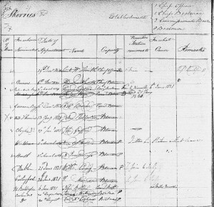
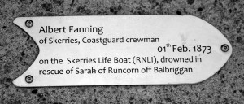
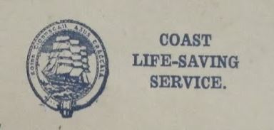
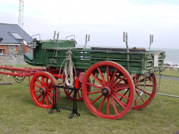
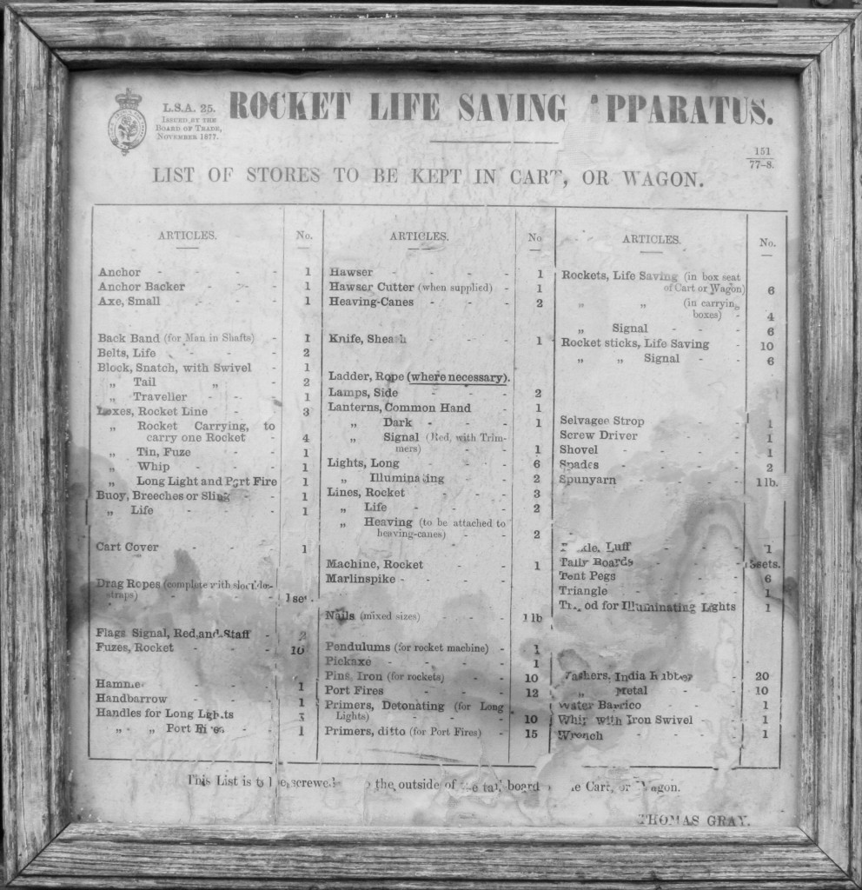
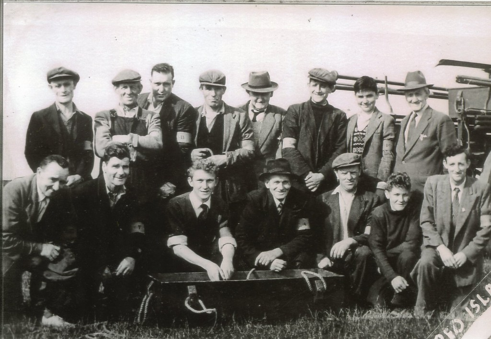

First Origins 1821/1822
Skerries Coast Guard can trace its origins back to 1821/1822 with the formation of the Coastguard Service in Ireland. The Coastguard was formed by the amalgamation of three existing services set up primarily to prevent smuggling:
- The Revenue Cruisers
- The Riding Officers
- The Preventative Water Guard
The initial establishment of Coastguard stations in Ireland was overseen by James Dumbrain, Comptroller General of the Irish Preventative Water Guard. Skerries Coastguard was one of only five stations initially established in the Dublin area in 1821. The nearest station to the South was located at Rush (overlooking the harbour) and to the North at Nannywater (near Laytown).
In January 1822 an additional Coastguard station was added at Portrane, Co Dublin. Later in 1822, two additional Coastguard stations were established in the area; one at Balbriggan, 8 miles North of Skerries and one on Lambay Island, off the coast of Rush. Later in the 1800s Coastguard stations would also be established at Loughshinny and Rogerstown harbour, Rush.

The original Skerries Coastguard station was sited at Red Island, near to where the Sea Memorial Pole is now located.
The Skerries station was manned with a crew of 12, comprised of the following:
- 1 Chief Officer
- 1 Chief Boatman
- 2 Commissioned Boatman
- 8 Boatman
Lieut. William Smith is listed as the first Chief Officer, appointed 19th December 1820. The extract from the book of establishment lists the names of the initial crew and date of appointment. When a crewman left the station, their name was loosely crossed out on the establishment book — hence the scribbles.

In 1873: Wreck of the Sarah Ann, a Runcorn Schooner, on rocks off the Balbriggan coast. Sadly a number of the rescuers lost their lives, including Albert Fanning, a Boatman member of Skerries Coastguard. Albert had helped to crew the Skerries lifeboat during the rescue. Five local volunteers with the Skerries lifeboat also lost their lives in the rescue.
The only four survivors of the lifeboat crew were Coastguard boatmen; each of these were later awarded Tayleur Fund medals for their brave actions on that fateful night. Three were boatmen with Skerries Coastguard: Robert Ellison, Thomas Woodley and William Scantlebury. The fourth recipient was Lot Syme, boatman with Balbriggan Coastguard. Later that same year, Lot Syme and Thomas Woodley both received promotions in the Coastguard service:
“MERITED PROMOTION
Mr Lot Syme, one of the four coastguards saved of the crew of the Skerries Lifeboat, whose name has been so prominently mentioned in connection with the disastrous event, on the night of the wreck of the Sarah of Runcorn, has just been promoted to the rank of chief-boatman-in-charge to the Castletown [coast guard] station, Co Cork. Mr Thmoas Woodley, of Skerries, one of the coxswains in charge of the lifeboat, and who also fortunately escaped being drowned on that melancholy occasion, has succeeded Mr Syme in Balbriggan. Mr Syme is a native of Brinny near Bandon.”
— Irish Times, Monday 26th May 1873
In 1878: Thomas Elmore is appointed Chief Officer of the Coastguard station at Skerries.
1907 Royal Humane Society: Testimonial to William Gillard, Coastguard boatman, Skerries, Co Dublin, for his rescue of a youth named McGarry who fell from Skerries pier on 14th June. Gillard had previously received recognition for saving life. (Irish Times, 20th July 1907.)
The photographs of the era were supplied by the No. 1 man John Kelly’s family and are thought to depict the first launch of a new lifeboat at Skerries. The exact date is unknown, but believed to be the early part of the 1900’s (certainly pre 1930).
1921/22 — War of Independence & Irish Free State
In the War of Independence many of the Coastguard stations were burned to the ground by Irish Volunteers, having been declared legitimate targets by the Irish Republican Army. This followed a similar fate to the Royal Irish Constabulary (RIC) barracks in the area at the time. The Skerries Coastguard station was recorded as being destroyed in a fire on Saturday 18th June 1921, along with other nearby stations in Loughshinny, Rush and Rogerstown.
“BURNED BY ARMED MEN — FOUR COASTGUARD STATIONS DESTROYED. At two o’clock on Saturday morning the Coastguard Stations at Skerries, Loughshinney, Rush, and Rogerstown, all in County Dublin, were burned to the ground by unknown men. The same procedure appears to have been adopted by the raiders in all cases.
Marching silently up to the different stations, each of which was occupied by a few men only, the raiders ordered the coastguards and their families outside, and then, sprinkling petrol over the house, set them on fire. At one station, ten bicycles were carried away. In some cases very little property was saved by the coastguards.”
— Irish Times, Monday 20th June 1921
1923 — A New Lifesaving Era Begins
In 1923, with the formation of the Irish Free State, the Coast Lifesaving Service (CLSS) was established. The formal date of re-establishment of the Skerries station was 4th July 1923. Skerries was assigned station number 3 of the Eastern District. Two other CLSS stations were sited to the North: at Greenore and Clogher Head, Co Louth. To the South the nearest station was at Dún Laoghaire.

The Coast Lifesaving Service was placed under the control of the Board of Trade and its role restricted to the following duties:
- lifesaving,
- salvage from wreck,
- administration of the foreshore.
On 4th July 1923 the crew list of Skerries Coast Life-Saving Service comprised 14 local men:
- John Kelly, No.1 Man, Postman of Hoar Rock (born 1883)
- Francis Boylan, No.2 Man, Farmer of The Square (born 1889)
- Joseph Regan, Labourer of Sherlock Terrace (born 1899)
- William Shiels, Sailor of The Square (born 1863)
- James Seaver, Labourer of Strand Street (born 1890)
- James Boylan, Gardener of Quay Street (born 1874)
- Robert Duff, Farmer of Strand Street (born 1892)
- John Joseph Seaver, Labourer of Strand Street (born 1896)
- Thomas Fanning, Labourer of Convent Avenue (born 1896)
- Patrick Gavin, Labourer of Strand Street (born 1873)
- Thomas McDermott, Carter of Cross Street (born 1863)
- William Caddle, Fisherman of The Square (born 1872)
- Michael Daly, Fisherman of Quay Street (born 1862)
- Christopher Shiels, Labourer of Sherlock Terrace (born 1903)
The local contractor for horses is listed as Mr John Seaver, whereby horses would be used to draw the Rocket Life Saving Apparatus Cart to the scene of a shipwreck. Interestingly, Mr John Kelly was also listed as the No.1 man in February 1915. Much of the 1923 crew would have previously served with the Coast Guard at Skerries prior to the CLSS establishment.
Having deployed the Maroon signal, the actions of the No.1 Man were prescribed as follows:
- If he is of the opinion that the Life Saving Apparatus can be successfully employed, he will at once make arrangements for the transport of the Company and all necessary apparatus and proceed to the scene of the wreck as quickly as possible.
- If it appears to be a case for the Life Boat, he will communicate at once with the nearest coxswain either by telephone or messenger. The Coast Life Saving Company will render any assistance that may be required to launch the Life Boat, and will stand by in any case their services may be required either with the Life Saving Apparatus or otherwise.
On 19th September 1934 James Mansfield (a Painter of “Altona”, 86 Strand Street, Skerries) joins the Skerries Coast Guard team. James would later become the No. 1 Man (Chief Officer) during much of the late 1930s and 1940s, assisted by No.2 Man Christopher Shiels.
In 1937, Walter Howlett (a Labourer of The Cross, Skerries) joins the Skerries team. Walter would become the No.1 Man for much of the 1950s and 1960s.
The Unit was equipped with a horse-drawn cart. This was used to carry the team and the Life Saving Apparatus equipment to the scene of an incident. The cart could also be drawn short distances by hand if required. The original Skerries Coast Guard rocket cart is currently on loan to Fingal County Council and is on public display at Newbridge House & Farm, Donabate, Co Dublin.

The Life Saving Apparatus kit comprised a defined list of equipment. A “list of stores to be kept in Cart” notice issued by the Board of Trade in November 1877 listed all the items carried in the Cart and was to be affixed to the outside of the Tail Board, serving as a useful reference for the team. Some of the items carried included signal flags, heaving canes, spades, port fires and tally boards.

In operating the Rocket Apparatus, each man was assigned a numbered armband. Each number signified a particular role to be carried out in the rescue drill. In crew pictures from a training exercise at Red Island, Skerries in 1958, each man can be seen wearing their numbered armband, usually on the left arm. The rocket apparatus kit was stored in several heavy wooden crates with rope handles.

Back row (L–R): John Joe McGuinness, Walter Howlett (No. 1 Man), Mattie O’Hara, J. McQuaine, Tommy Boylan (No. 2 Man), Jimmy Manson, Jack Beggs, and visiting Coastguard Captain Frayne.
Front row (L–R): Jem Dillon, John Guildea, Seamus Hand, John (Jem) Seaver, Larry Davey, John Hand, Francie Grimes.
Like many other CLSS teams around the coast, the Skerries crew carried out exercise drills on the use of the Rocket Apparatus kit every one to two months. These drills were often carried out nearby at Red Island and overseen by the CLSS District Officer from Dublin. Informal competitions would be held among the crew at each drill on key skills — throwing the heaving cane, semaphore, Morse code — with small cash prizes awarded by the District Officer for the winners of each skill.
The heaving cane consisted of a short, sturdy bamboo cane with a heavy lead weight bound at the top. A long, very fine, light rope (line) was attached to the cane’s other end and it was used to throw the line out to a vessel in distress close to shore (in instances where the rocket was not suitable or too powerful to use). The crew member would wade out into the waves to near chest height and throw the heaving cane to the vessel from an overhead throw. The receiving ship could then use this light line to “heave” aboard the heavier rope of the Breeches Buoy for her crew to be rescued ashore. Interestingly, the typical prize-winning training drill throw of the heaving cane in the 1930’s stood at an impressive 77 yards.
The current Skerries Coast Guard station at Red Island was constructed in the 1960’s and remains in operational use to this day. A local builder from Red Island, Skerries won the public tender to build the station, constructed from concrete blocks and pre-cast concrete sections. Additional modernisation of the building has continued to the present day, but the original structure is largely unchanged.
Irish Marine Emergency Service (IMES)
1991: change of service name to the Irish Marine Emergency Service (IMES). As part of a nationwide service upgrade, the first motor vehicle is assigned to the Skerries station. The Ford Transit van could carry 3 crew and was used to transport the full rescue kit to the scene of an incident, significantly reducing incident response times.
Irish Coast Guard (IRCG)
2001: change of service name to the Irish Coast Guard (Garda Cósta na hÉireann), which is still in use today. This is often abbreviated as “IRCG”. The current service logo features an intertwined anchor and harp. Note the new spelling of Coast Guard as two separate words.
In May 2007, Vanessa Gaffney is appointed Officer in Charge. John Ryan is appointed as Deputy Officer in Charge.
In October 2016 the Skerries team were awarded a Marine Ministerial Letter of Appreciation for Meritorious Service for their contribution to a challenging rescue of a cliff faller at Portrane in June 2015. The presentation was made to the team at a ceremony at Farmleigh House.
In 2021 a significant milestone in the history of Skerries Coast Guard is reached with the deployment of drone search capability. Skerries Coast Guard is one of the first Coast Guard teams on the east coast to launch drone search capability. Initially two team members were trained to IAA Drone Pilot status, with a further two following shortly after. Several drones were tested by the team, resulting in enhanced airborne search capability with infra-red (FLIR) and searchlight ability.
In 2022 the Irish Coast Guard celebrated a historic milestone: the 100th anniversary of the establishment of the Irish Coast Guard (or the Coast Lifesaving Service, as it was originally known) and the 200th anniversary of the first establishment of a Coast Guard service in Ireland. This was marked by the presentation to every serving Coast Guard member of a framed commemorative set of Coast Guard Wreck Tokens.
In Mar 2025, Gary Creighton is appointed Officer in Charge.